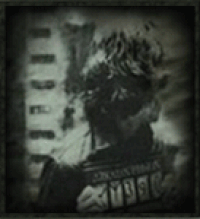

O PRISIONEIRO DE AZKABAN fUGIU!
Quem é o prisoioneiro de Azkaban?
Sirius Black III (1959 - 18 de junho de 1996), também conhecido por seu apelido Almofadinhas, foi um bruxo puro-sangue, filho de Orion e Walburga Black e irmão mais velho de Régulo por um pouco mais de um ano. Embora tenha sido o herdeiro da Casa dos Black, Sirius descordou com a crença de sua família em relação à pureza de sangue e desafiou a tradição quando foi selecionado para a Grifinória em vez da Sonserina na Escola de Magia e Bruxaria de Hogwarts, que ele frequentou de 1971 a 1978. Enquanto o relacionamento de Sirius com sua família deteriorou, ele conquistou a amizade de Tiago Potter, Remo Lupin e Pedro Pettigrew. Os quatro amigos, também conhecidos como os Marotos, se juntaram à Ordem da Fênix para lutar contra Lord Voldemort e seus Comensais da Morte durante a Primeira Guerra Bruxa. Sirius também se tornou o padrinho de Harry Potter, filho de Tiago e Lílian Potter.
Quando Pettigrew traiu os Potter para Voldemort, Sirius foi se vingar de Pettigrew. Entretanto, Pettigrew pôde culpar Sirius por sua traição dos Potter, o assassinato de doze trouxas, e o assassinato encenado de Pettigrew antes de Sirius fazê-lo. Sirius foi mandado para Azkaban por doze anos, eventualmente tornando-se a única pessoa a escapar da prisão sem ajuda, se transformando em sua forma de animago - um grande cão preto, confundido com o Sinistro. Sirius expôs a mentira de Pettigrew a seu velho amigo Remo e a seu afilhado Harry. Depois de Lord Voldemort retornar em 1995, Sirius retornou à Ordem. Ele foi morto por sua prima Belatriz Lestrange durante a Batalha do Departamento de Mistérios, e subsequentemente absolvido de todas as acusações pelo Ministério da Magia. Ele reapareceu brevemente através da Pedra da Resurreição para Harry, junto com Tiago, Lílian e Remo em 1998.
"Sirius era um homem corajoso, inteligente e dinâmico, e homens assim em geral não se
contentam em ficar escondidos em casa, sabendo que outros estão em perigo."
—Alvo Dumbledore